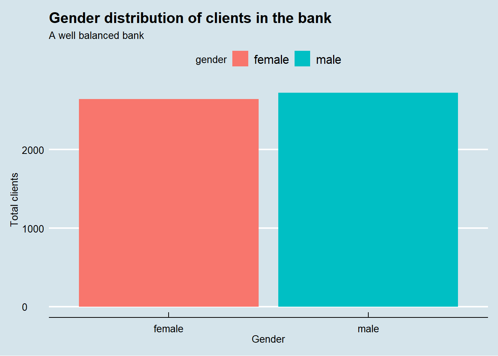
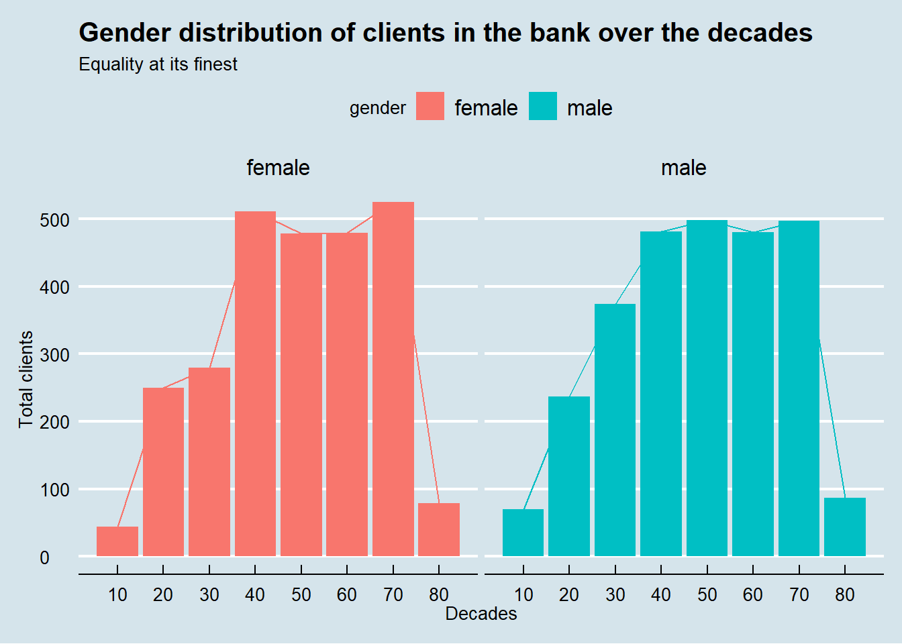
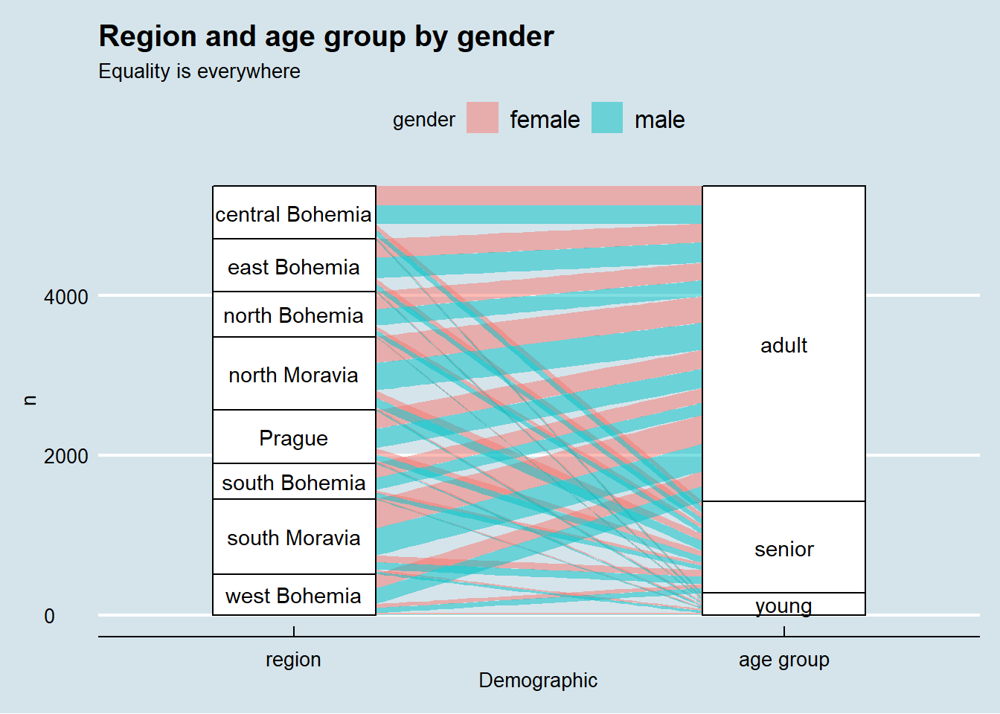
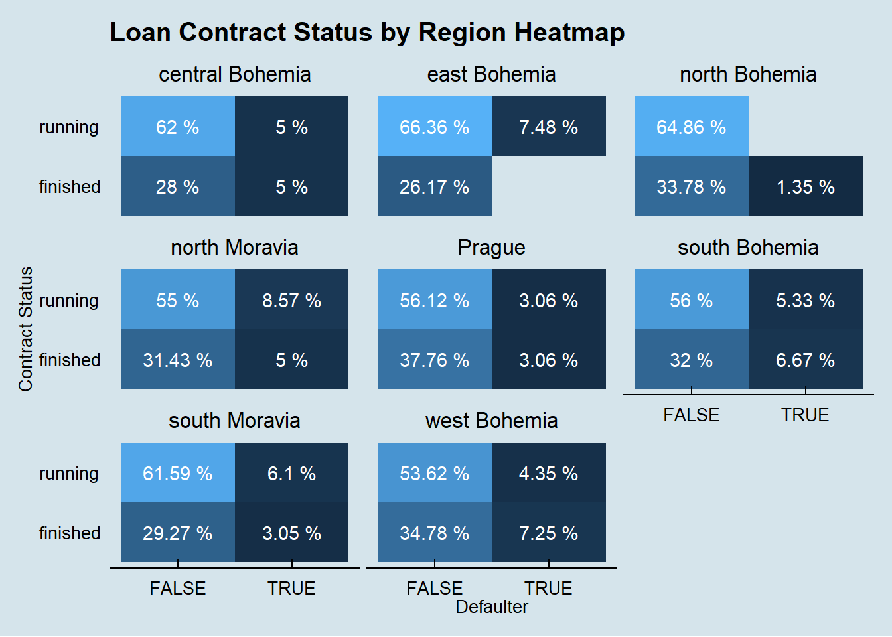
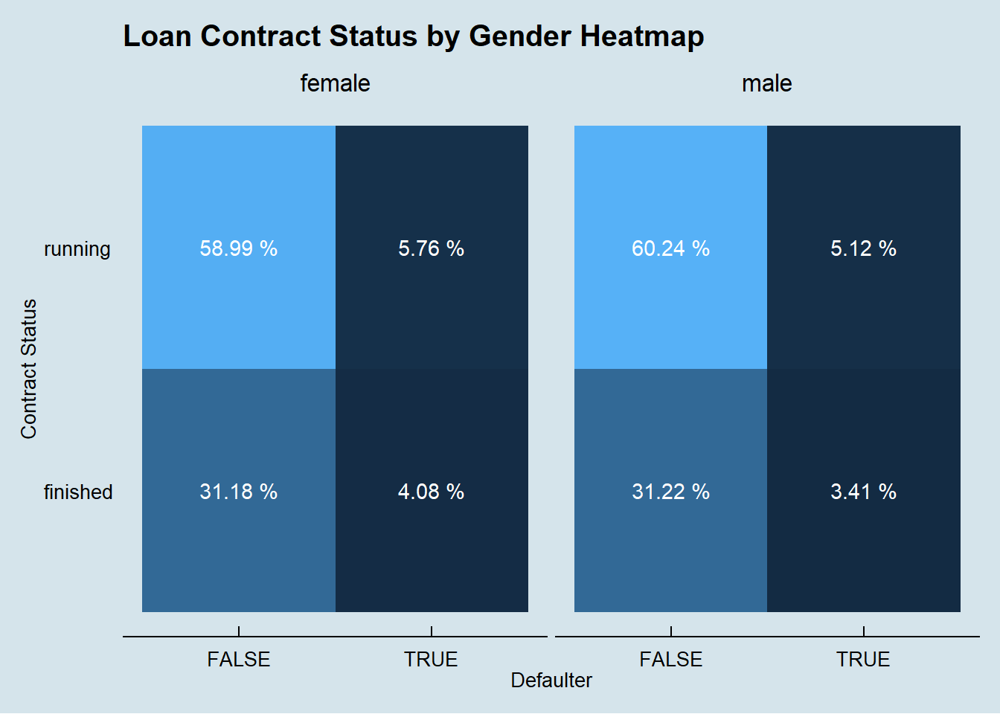

Berka Bank Report
Daniel Campos (A99999999 / daniel.ferraz.campos@gmail.com)
Leandro Daniel (A57622988 / contato@leandrodaniel.com)
Rodrigo Goncalves (A57566093 / rodrigo.goncalves@me.com)
Ygor Lima (A57549661 / ygor_redesocial@hotmail.com)
July, 2019
1 Berka Bank (setting the scene)
1.1 Domain
Onde upon a time, there was a bank offering services to private persons. The services include managing of accounts, offerings loans, etc.
1.2 Task descripion
The bank wants to improve their services. For instance, the bank managers have only vague idea, who is a good client (whom to offer some additional services) and who is a bad client (whom to watch carefully to monimize the bank loses).
Fortunately, the bank stores data about their clients, the accounts (transactions within several months), the loans already granted, the credit cards issued.
The bank managers hope to improve their undestanding of customers and seed specific actions to improve services. A mere application of discovery tool will not be convincing for them.
1.3 Data description
This database was prepared by Petr Berka and Marta Sochorova.

Simplified logical data model of Berka Bank.
1.4 Project at GitHub
This project can be found and downloaded at GitHub: https://github.com/ldaniel/R_Bank_Berka
Valar Morghulis! :)
2 Data ingestion, cleaning, translation and enhancement
Before starting the Berka Analysis, a few important steps were taken in order to prepare the source data files. These steps are listed below:
- Step 01: Create Functions;
- Step 02: Data Ingestion;
- Step 03: Data Cleaning;
- Step 04: Label Translation;
- Step 05: Data Enhancement.
2.1 Create Functions
This step create functions to be used in the next steps. Following, all functions created are described.
2.1.1 GetGenderFromBirthnumber
The birth_number column is given in the form of YYMMDD for men, and YYMM+50DD for women. The objective of this function is to return the gender of the client via the birth_number.
GetGenderFromBirthnumber <- function(var_birth_number) {
month <- substr(var_birth_number, 3, 4)
result <- ifelse(as.integer(month) > 50, "female", "male")
return(as.factor(result))
}2.1.2 GetBirthdateFromBirthnumber
The birth_number column is given in the form of YYMMDD for men, # and YYMM+50DD for women. The objective of this function is to return the final birthday as Date.
GetBirthdateFromBirthnumber <- function(var_birth_number, var_gender) {
year <- paste("19", substr(var_birth_number, 1, 2), sep="")
month <- ifelse(var_gender == "male", substr(var_birth_number, 3, 4),
as.integer(substr(var_birth_number, 3, 4)) - 50)
day <- substr(var_birth_number, 5, 6)
result <- as.Date(paste(year, "-", month, "-", day, sep=""), format = "%Y-%m-%d")
return(result)
}2.1.3 ConvertToDate
The objective of this function is to convert the strange bank date style to the regular R Date datatype.
ConvertToDate <- function(var_date) {
year <- paste("19", substr(var_date, 1, 2), sep="")
month <- substr(var_date, 3, 4)
day <- substr(var_date, 5, 6)
result <- as.Date(paste(year, "-", month, "-", day, sep=""), format = "%Y-%m-%d")
return(result)
}2.1.4 GetAgeFromBirthnumber
The objective of this function is to get age given the birth_number.
GetAgeFromBirthnumber <- function(var_birth_number) {
base_year <- 99 # considering 1999 as the base year for this exercise
year <- substr(var_birth_number, 1, 2)
result <- base_year - as.integer(year)
return(result)
}2.2 Data Ingestion
The process of data ingestion — preparing data for analysis — usually includes steps called extract (taking the data from its current location), transform (cleansing and normalizing the data), and load (placing the data in a database where it can be analyzed).
During this step, in addition to the loading data processes, it was performed data casting, column renaming and small touch-ups. The list below describe each table adjustment taken:
- District: renaming columns and casting columns with decimal or “?” values;
- Credit Card: casting column issued in creditcard table from string to datetime data type;
- Account: casting column date in account table from string to datetime data type;
- Loan: casting columns in table loan to the right data types;
- Permanent Order: casting columns with decimal values;
- Transaction: casting columns in table transaction to the right data types.
2.3 Data Cleaning
The objective of this step is analysing missing values and other strange conditions. In order to accomplish this task, a few R functions were used to quickly discover missing values, like NA and empty fields.
First thing done, was fixing observations in k_symbol transaction table with ’ ’ (one space) to empty string (’’), using the following command.
transaction$k_symbol = trimws(transaction$k_symbol)Then, the command below was used to find out any NA values in each table.
sapply(TableName, function(x) sum(is.na(x)))Solely the transaction table has NA values, in the following columns:
| x | |
|---|---|
| trans_id | 0 |
| account_id | 0 |
| date | 0 |
| type | 0 |
| operation | 0 |
| amount | 0 |
| balance | 0 |
| k_symbol | 0 |
| bank | 0 |
| account | 760931 |
Finally, the following command was used in each table to find out where empty values was hidden.
sapply(TableName, function(x) table(as.character(x) =="")["TRUE"])Again, only the transaction table had empty values, according to the table below:
| x | |
|---|---|
| trans_id.NA | NA |
| account_id.NA | NA |
| date.NA | NA |
| type.NA | NA |
| operation.TRUE | 183114 |
| amount.NA | NA |
| balance.NA | NA |
| k_symbol.TRUE | 535314 |
| bank.TRUE | 782812 |
| account.NA | NA |
2.4 Label Translation
In order to make the data information more understandable, it was translated some relevant labels and domains from Czech to English.
2.5 Data Enhancement
This step aims to improve the analysis by adding auxiliary information. Data enhancement is all about making sure any data that is coming into the business is being looked at with a critical eye and is being filtered down to maximize its value.
The code below get gender, birthday and age from birth_number column using GetGenderFromBirthnumber and GetBirthdateFromBirthnumber functions.
client <- client %>%
mutate(gender = GetGenderFromBirthnumber(birth_number)) %>%
mutate(birth_date = GetBirthdateFromBirthnumber(birth_number, gender)) %>%
mutate(age = GetAgeFromBirthnumber(birth_number))The code below improved loan data by having a classification regarding its payment status.
loan <- mutate(loan, defaulter =
as.logical(plyr::mapvalues(status, c ('A','B','C','D'),
c(FALSE,TRUE,FALSE,TRUE))),
contract_status = plyr::mapvalues(status, c ('A','B','C','D'),
c('finished','finished','running','running')),
type = 'Owner')The code below improved client data by having its age group.
client <- mutate(client, age_bin = paste(findInterval(age,
c(10, 20, 30, 40, 50, 60, 70, 80, 90, 100)) * 10,'+'))3 The Berka Bank Analysis
3.1 Gender Exploration
At first glance, gender equality is well balanced in the bank, even when observed over the decades. Even more impressive, gender equality is everywhere in the country.
# gender distribution of clients in the bank
ggplot(data = client) +
aes(x = gender, fill = gender) +
geom_bar() +
labs(title = "Gender distribution of clients in the bank",
subtitle = "A well balanced bank",
x = "Gender",
y = "Total clients") +
theme_economist()
clientGenderOverDecades <- client %>%
group_by(decade = as.integer(substr(client$birth_number, 1,1)) * 10,
gender = client$gender) %>%
count()
# gender distribution of clients in the bank over the decades
ggplot(data = clientGenderOverDecades) +
aes(x = decade, fill = gender, weight = n) +
scale_x_continuous(breaks = c(0, 10, 20, 30, 40, 50, 60, 70, 80)) +
geom_bar() +
geom_line(aes(y = n, color = gender)) +
labs(title = "Gender distribution of clients in the bank over the decades",
subtitle = "Equality at its finest",
x = "Decades",
y = "Total clients") +
theme_economist() +
facet_wrap(vars(gender))
# alluvial diagram representation of gender, age group and region
clientGenderAgeGroupByRegion <- client %>%
mutate(age_group = ifelse(age < 21, "young",
ifelse(age >= 21 & age <= 60, "adult", "senior"))) %>%
inner_join(district, by = "district_id") %>%
group_by(age_group, gender, region) %>%
count()
ggplot(data = clientGenderAgeGroupByRegion,
aes(axis1 = region, axis2 = age_group, y = n)) +
scale_x_discrete(limits = c("region", "age group"), expand = c(.1, .1)) +
xlab("Demographic") +
geom_alluvium(aes(fill = gender), knot.pos = 0) +
geom_stratum() +
geom_text(stat = "stratum", label.strata = TRUE) +
theme_economist() +
ggtitle("Region and age group by gender", "Equality is everywhere") 
3.2 Loan Exploration
left_join(loan, disposition, by = 'account_id') %>%
left_join(client, by = 'client_id') %>%
left_join(district, by = 'district_id') %>%
group_by(region, contract_status, defaulter) %>%
summarise(count = n(),
amount = sum(amount)) %>%
group_by(region, contract_status) %>%
mutate(count_contract_status = sum(count),
amount_contract_status = sum(amount)) %>%
group_by(region) %>%
mutate(count_region = sum(count),
amount_region = sum(amount)) %>%
ggplot(aes(x = defaulter, y = contract_status, fill = count / count_region)) +
geom_bin2d(stat = 'identity') +
geom_text(aes(label = paste(round(count / count_region * 100, 2), '%')),
color = 'white') +
facet_wrap(~region) +
theme_economist() +
theme(legend.position = 'none', panel.grid.major = element_blank(),
panel.grid.minor = element_blank()) +
labs(x = 'Defaulter',
y = 'Contract Status',
title = 'Loan Contract Status by Region Heatmap')
left_join(loan, disposition, by = 'account_id') %>%
left_join(client, by = 'client_id') %>%
left_join(district, by = 'district_id') %>%
group_by(gender, contract_status, defaulter) %>%
summarise(count = n(),
amount = sum(amount)) %>%
group_by(gender, contract_status) %>%
mutate(count_contract_status = sum(count),
amount_contract_status = sum(amount)) %>%
group_by(gender) %>%
mutate(count_gender = sum(count),
amount_gender = sum(amount)) %>%
ggplot(aes(x = defaulter, y = contract_status,
fill = count / count_gender)) +
geom_bin2d(stat = 'identity') +
geom_text(aes(label = paste(round(count / count_gender * 100, 2), '%')),
color = 'white') +
facet_wrap(~gender) +
theme_economist() +
theme(legend.position = 'none', panel.grid.major = element_blank(),
panel.grid.minor = element_blank()) +
labs(x = 'Defaulter',
y = 'Contract Status',
title = 'Loan Contract Status by Gender Heatmap')
left_join(loan, disposition, by = 'account_id') %>%
left_join(client, by = 'client_id') %>%
left_join(district, by = 'district_id') %>%
group_by(age_bin, contract_status, defaulter) %>%
summarise(count = n(),
amount = sum(amount)) %>%
group_by(age_bin, contract_status) %>%
mutate(count_contract_status = sum(count),
amount_contract_status = sum(amount)) %>%
group_by(age_bin) %>%
mutate(count_age_bin = sum(count),
amount_age_bin = sum(amount)) %>%
ggplot(aes(x = defaulter,
y = contract_status, fill = count / count_age_bin)) +
geom_bin2d(stat = 'identity') +
geom_text(aes(label = paste(round(count / count_age_bin * 100, 2), '%')),
color = 'white') +
facet_wrap(~age_bin) +
theme_economist() +
theme(legend.position = 'none', panel.grid.major = element_blank(),
panel.grid.minor = element_blank()) +
labs(x = 'Defaulter',
y = 'Contract Status',
title = 'Loan Contract Status by Age Group Heatmap')
3.3 Account Balance Exploration
account_balance <- arrange(transaction, desc(date), account_id) %>%
group_by(account_id) %>%
mutate(avg_balance = mean(balance)) %>%
filter(row_number() == 1) %>%
select(account_id, date, balance, avg_balance)
colnames(account_balance) <- c("account_id", "last_transaction_date",
'account_balance', 'avg_balance')
left_join(account_balance, disposition, by = 'account_id') %>%
left_join(client, by = 'client_id') %>%
left_join(district, by = 'district_id') %>%
filter(type == 'Owner') %>%
ggplot(aes(avg_balance)) +
geom_density(alpha = 0.5, aes(fill = gender)) +
scale_x_continuous(labels = scales::comma) +
labs(title = 'Average Account Balance Distribution by Gender and Region') +
theme_economist() +
facet_wrap(~region)
3.4 District Exploration
czech_regions <- read.csv(textConnection(
"City,Lat,Long,Pop
prague,50.073658,14.418540,645966
central Bohemia,49.8175,15.4730,645966
South Bohemia,48.9458,14.4416,645966
west Bohemia,49.7384,13.3736,645966
north Bohemia,50.7663,15.0543,645966
east Bohemia,50.0343,15.7812,645966
south Moravia,48.9545,16.7677,645966
north Moravia,49.5938,17.2509,645966"))
leaflet(czech_regions) %>%
addTiles() %>%
addCircles(lng = ~Long,
lat = ~Lat,
weight = 2,
radius = ~sqrt(Pop) * 30,
popup = ~City)4 Conclusion
To.do